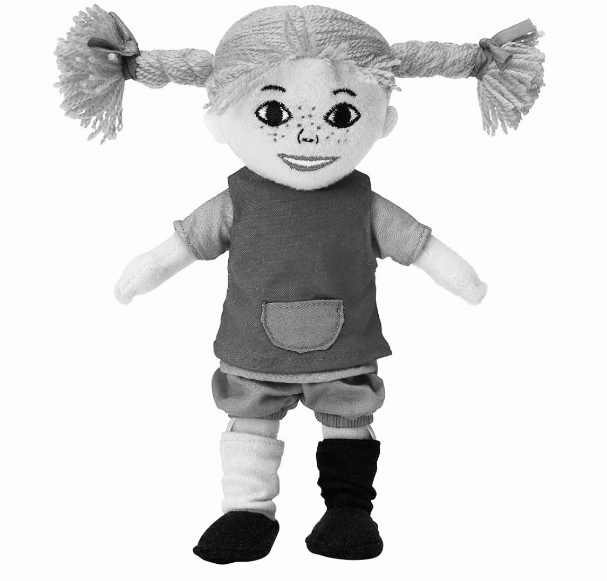
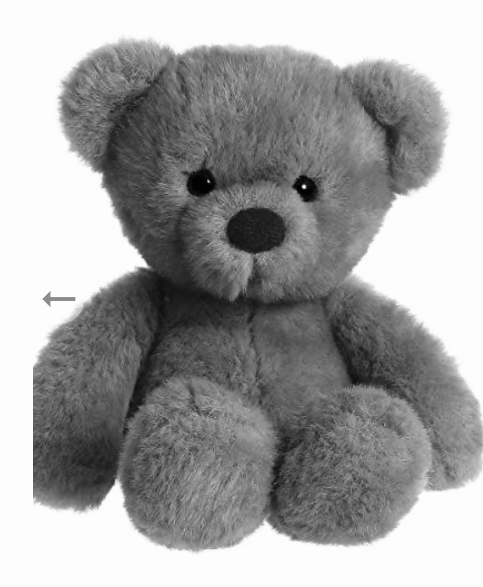

När bilen försvann runt hörnet började en overklighet i verkligheten.
Satt kvar ute en bra stund och kände varken behov som kapacitet att resa mig upp.
Hela jag följde med dig och kvar på huk satt skalet.
Som en död fast värre för allt hade varit mer levande än någonsin men vuxit sig så
stort att det inte längre fick plats, krävde mer utrymme, utrymme som inte fanns.
Jag klev rakt in i ett bedövat tillstånd där ingenting kändes, städade varenda mm
av lägenheten, tvättade flera maskiner, plockade ur diskmaskinen, bytte lakan och rensade
ur kylen.
Gjorde allt till perfektion som en mekanisk robot för att inte låta paniken få någon
som helst plats.
Hoppade till av det numera fruktansvärda plinget på instagram, visste att det inte var du,
men första stunden kroppen känt något sen du åkte, den hoppades ändå.
Slutförde, duschade och la mig som en boll runt en av mina kuddar i mitten av sängen och där
blev jag liggandes, stirrade ut i tomma intet, ingen musik, allt var knäpptyst.
Fokuserade på att andas, hjärtat slog fort som efter ett lopp, livets lopp.
Tänkte på hur du mådde, hur jag nästan alltid bara vetat i vilket känslostadie du befinner dig i.
Hur jag även i den knut av hög jag låg i fortsatte bära oss båda parallelt för att hjärtat inte
förmår göra annat.
Ser hur du kliver ut ur vår verklighet, sammanbiten kör hemåt, försöker samla dig och
sätta på dig en mask som inte riktig längre sitter som den brukade. Hur du gör det som
förväntas. Konstant frånvarande i närvaron.
Utmattning och känslan av min kropp nära dig, händer i ditt hår, allt ligger på näthinnan när
det är dags att sova. Det är inte romantik det är saknad i huden, känslan av att få va min.
Att vakna och veta att mobilen är tyst knyter sig i magen och dagen känns automatiskt tung och grå.
Dagen förlöper i meknisk form och det är lite som att befinna sig i ett vakum.
Hjärnan börjar sakta förstå att jag är borta på riktigt men kroppen vägrar acceptera.
Den kommande tiden när du försöker intala dig att det här var det rätta, det går över kommer den börja protestera,
sömnen blir påverkad först, säkert högre risk för migrän, svårtigheter att fokusera. Det är kroppens sätt att försöka
larma att nu måste vi till henne och den slåss sida vid sida om förlusten och saknaden.
Jag säger inte detta för att måla fan på väggen eller dra ner dig i något, jag säger det för att du ska va lite förberedd
och för att det är inget konstigt.
Jag är redan i stadiet där allt påminner om dig, varit ett tag och då kan du förstå hur många vita bilar det finns.
Det här är inget man överlever det är verkligen något man förhåller sig till, sörjer det i ensamma stunder och möter
dagen från en annan vinkel en ny verklighet utan varandra.
Inte det vackraste jag skrivit men varenda stavelse är satta i tårar. Jag anser mig va en tuff brud i lyxflörpacknng, pippi,
men aldrig har jag önskat så hårt att enbart få va ditt lilla mjuka gossedjur och stanna i famnen för alltid.

